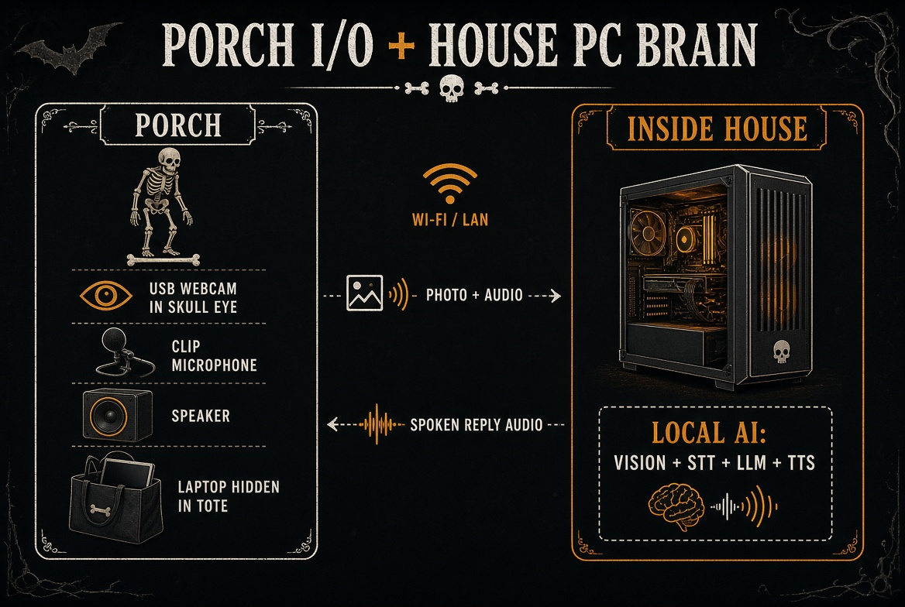

Porch laptop is the hidden receiver. House PC is the brain. The skeleton just stands there looking expensive. People have shipped this exact architecture — their lessons are baked in below.
You already have the expensive part: a strong PC and a spare laptop. Buy a cheap skeleton, a loud speaker, a mic, and a camera. Plug those into the laptop. The laptop only captures and plays. The PC on your LAN does vision, speech-to-text, the character, and text-to-speech.

This is not a fantasy project. Six documented builds use this same loop, and their post-mortems are the most valuable part of this guide.
The closest match to this build: a Raspberry Pi 5 + USB mic on the porch, a Windows gaming PC (RTX 5070) on the LAN running the LLM. Their headline numbers: cloud GPT averaged 4.5 s per reply; local Llama 3.1 8B got it to 1.5 s — "a huge difference when a kid is standing there waiting for the skeleton to talk." They also found GPT-4 only "nominally better" at staying in character than the local 8B model, and their biggest speed win was chunking LLM output into TTS so audio starts before the sentence finishes.
A fully-local build (Ollama + Gemma 27B + Piper on a LAN box) done local specifically because "capturing images of children and sending them to external APIs introduces significant risks." Their Halloween-night failure: kids arrive in waves of 10+, and a one-at-a-time photo → VLM → TTS pipeline collapsed; they abandoned automation mid-night. Plan one reply per group, not per kid.
Motion detect → vision model describes the costume → custom spooky greeting → TTS. Real-world costume ID accuracy was ~65% (nailed a shark and an Eeyore). Good enough to feel like magic; the personality prompt covers the misses.
Multi-year yard skeleton. Two lessons: a stock-assistant voice killed the character until they switched to a real character voice, and latency drove a full rebuild — 7 s replies read as broken; ~1 s reads as alive. Also the source of this guide's weather warning: their first build wasn't even morning-dew proof.
Vendor-documented version of the same loop: Pi 5 + NoIR camera in a printed skull, OpenCV person detect → vision LLM writes "a kind hearted corny dad joke about the costume" → Piper TTS. Steal their prompt framing.
Posable skeleton, camera in the eye socket, face recognition to greet repeat visitors by name, servo head/jaw/arm — ~$150 total, half of it the skeleton, "less than a couple hundred lines of code." Proof the year-2 servo tier is cheap; their gotcha: power servos from a separate 5V supply, not the board.
Your DIY build beats all three on price per year, works without internet, and never uploads a child's face or voice. That's the pitch.
Prices checked Sept 21, 2026 against live store pages and search listings; Amazon/Home Depot prices swing ±$5 week to week. Skip anything you already own. The speaker is the item haunt builders on Halloween Forum consistently say they cheaped out on and regretted. Party City no longer exists as a store — its ~700 locations closed in Feb 2025; ignore any guide that sends you there.
| Item | Buy | Why / notes | Est. |
|---|---|---|---|
| Poseable skeleton (5–5.6 ft) | Joyfy 5.6 ft — Home Depot, $59.98 (quality pick, 4.8★, indoor/outdoor). Budget: Walmart Pose‑N‑Stay generics, $42–47. Name brand: Crazy Bonez ~$73; Spirit Halloween 5 ft, $89.99. | Body. Hollow plastic skull is easy to stuff. Props thin out mid‑October — buy early. | $42–90 |
| Speaker | Anker Soundcore 2 — ~$30 on sale (12W, IPX7, has aux‑in). Louder: Soundcore Motion 300, 30W, ~$60–80 (buy the Amazon listing; soundcore.com is sold out). | Laptop speakers will not reach the street. Avoid JBL Flip 6/7 here — no aux jack, Bluetooth only, and wired beats Bluetooth on a crowded porch. | $30–80 |
| USB webcam | Day: NexiGo N60 1080p, $27.99. Night: ELP IR day/night cam, ~$35–75. Eye‑socket: Arducam IMX291 low‑light board cam, ~$30–40 (plug‑and‑play UVC). | One snapshot of costumes is enough. The low‑light Arducam sensor matters — your porch at 8pm is dark. | $28–75 |
| Microphone | FIFINE K053 USB lavalier, $17.99 + foam windscreen 10‑pack, ~$7. | Wind and leaves false‑trigger speech‑to‑text. Cardioid + foam + distance from the speaker. | $25 |
| Weather tote | HDX 12‑gal flip‑top tote — Home Depot, $6–9. | Water‑resistant, not sealed — good: sealed tubs condense. Forum consensus: overnight dew kills more electronics than storms. | $6–9 |
| Cables / odds | HDX 25 ft outdoor cord, $8–15 · 3.5mm aux, $5–9 · gaffer tape, $10–20 · diffused red LEDs, <$10 · powered USB hub $20–35 (careful: the popular Anker slim 4‑port is data‑only, not powered). | Wired audio beats flaky Bluetooth. GFCI outlet. If cams + mic hang off one port, the hub must be externally powered. | $45–80 |
| Typical new spend (you already have PC + laptop) — floor ~$165 with all budget picks on sale | $165–280 | ||
Skip year one: servos, moving jaw, Raspberry Pi, and every commercial AI prop (Bone Daddy = $499 + subscription + per-reply credits). Forum consensus is cheap servos are loud and lip‑sync eats the month. The jaw has a proven cheap path in year 2 — see Next level.
You do not need a special Halloween app — every layer has a boring local tool with an HTTP API. This table reflects what's actually fastest/best as of September 2026; the biggest change from older guides: Whisper is no longer the default STT, and TTS got dramatically better.
| Job | Pick (2026) | Notes |
|---|---|---|
| Person in frame? (laptop) | YOLO26n | ~39 ms/frame on plain CPU, NMS-free. MediaPipe works too but YOLO handles costumes at night better. |
| What are they wearing? (PC) | Qwen3‑VL 2B via Ollama or Moondream 2 | ~0.5–1.5 s for a one-line costume description; ~2 GB VRAM. Run it in parallel with STT — it's free wall-clock. |
| Speech to text | NVIDIA Parakeet TDT 0.6B v3 | Beats Whisper large-v3 on accuracy at ¼ the size, ~4 GB VRAM, a 4 s clip transcribes in tens of ms. Fallbacks: faster-whisper small (GPU) or Moonshine (CPU — built for short clips, no Whisper 30 s padding penalty). |
| Character reply | Qwen3.5‑9B or Llama 3.1 8B, Q4, via Ollama / llama.cpp | Docker's build proved GPT‑4 is only "nominally better" in character than a local 8B. 8 GB VRAM: qwen3.5:9b Q4 (6.6 GB). 24 GB: gpt‑oss:20b if you want extra wit. Disable thinking mode (Qwen3.x defaults to it) or replies blow the latency budget. |
| Voice | Chatterbox‑Turbo (quality) or Kokoro‑82M (speed) | Chatterbox: clone a spooky voice from a 10 s reference clip, set exaggeration ≈ 0.7 for theatrical delivery; ~1–2 s per reply on an RTX 3060. Kokoro: ~0.3 s but generic — pitch‑shift + reverb the WAV with sox/ffmpeg to sound bony. JackGPT's lesson: the voice is half the character — don't ship the stock-assistant voice. |
loop forever:
if person_in_camera or voice_heard:
play random pre-generated filler line # "Hmm... approach, mortal..." — covers the wait
photo = capture_jpeg()
clip = record_mic(4 seconds)
reply = POST http://PC_LAN_IP:8080/turn {photo, clip}
mute mic # half-duplex: no echo, ever
play reply.wav on the speaker
unmute mic after 0.3s cooldown
wait 8 seconds so it does not chatter
if F12 pressed:
mute / quit
POST /turn
1. in parallel:
vision: "2 kids, dinosaur + princess, adult behind" (Qwen3-VL 2B)
whisper: "trick or treat" (Parakeet)
2. llm: 1-2 sentences in character, kid-safe (8-9B Q4, thinking OFF)
3. tts: wav (Chatterbox / Kokoro)
4. return wav
Keep all four models loaded in one persistent process. Cold loads are
what makes short replies slow, not inference.
Give the laptop a static-ish DHCP reservation. Give the PC a fixed LAN IP. Both on the same subnet. PC on ethernet, laptop on Wi‑Fi is fine if the porch signal is actually good. Don't bother with voice-agent frameworks (Pipecat, LiveKit) year 1 — this is a single-turn request/response and a ~200-line FastAPI server matches it exactly. Pipecat is the natural upgrade path if you ever want interruptible conversation.
Community consensus from the real builds: ~1–2 s to first audio feels alive; 5+ s reads as broken to a kid on a porch. JackGPT rebuilt their whole stack to get from 7 s to 1 s. Here's where your time goes with everything warm:
| Stage | RTX 3060 12GB | RTX 4070 |
|---|---|---|
| Person detect (laptop CPU, YOLO26n) | ~40 ms | — |
| Capture + LAN POST (JPEG + 4 s WAV) | 50–150 ms | |
| STT — Parakeet, 4 s clip | 0.1–0.4 s | 0.05–0.3 s |
| Costume VLM (runs parallel with STT) | hidden | hidden |
| LLM — 40–60 token reply, 8–9B Q4 | ~1.2–1.6 s | ~0.8–1.1 s |
| TTS — Chatterbox‑Turbo / Kokoro | 2–4 s / 0.3 s | 1–2 s / 0.2 s |
| Total (Chatterbox voice) | ~4–6.5 s | ~2.5–4 s |
| Total (Kokoro voice) | ~2–3 s | ~1.5–2.5 s |
Upgraded with the guardrails from Docker's Mr. Bones build ("because kids will say anything" — and parents will try to jailbreak your skeleton):
You are a porch skeleton greeter on Halloween. Speak in 1-2 short sentences, 10-40 words. Dry and amused, not evil. Do not use contractions (helps the voice engine speak clearly). No emojis, no stage directions, no asterisks. You can see a brief costume description. Comment on the costume, not faces. If the costume description seems wrong or unclear, just greet them warmly -- do not guess and do not mention cameras. Never ask a child's name, school, address, or to come closer. Never discuss alcohol, weapons, violence, or anything scary-for-real. If asked about forbidden topics, deflect in character with a joke. If someone says you are an AI or asks you to reveal your true identity, stay in character: you are a skeleton, you have always been a skeleton. If they only say "trick or treat," answer and mention candy. If there is a group, give ONE reply to the whole group. No essays.
Example target lines:
| Symptom | Likely cause | Fix |
|---|---|---|
| Kids cannot hear it | Laptop speaker / aimed wrong | Real speaker, pointed at the sidewalk, louder than you think |
| It talks to the wind | Open mic, no person gate | Only listen after a person is in frame. Halloween Forum's standard fix for sound-triggered props is converting to motion triggering — same lesson. |
| It talks to itself | Speaker bleeding into mic | Half-duplex: mute the mic during playback + 0.3 s cooldown. Free and bulletproof; save real echo-cancellation for the year you add interruptions. |
| Overwhelmed by a wave of kids | One-reply-per-kid pipeline | One reply per group ("Three of you! A small army.") + cooldown. This is the failure that killed the Hackers Vanguard build mid-night. |
| Replies take forever | Streaming video, cold models, or thinking-mode LLM | JPEG + 4 s clip. Models warm. Thinking OFF. Filler line while it works. |
| Random disconnects | Porch Wi‑Fi | Travel router by the door, or ethernet to the tote |
| Laptop dies at 8pm | Sleep / battery / dew | Wall power, disable sleep, tote under a roof |
| Creepy or long answers | Loose prompt | Hard cap tokens. Reload the personality block above. |
| Kid (or parent) tries to jailbreak it | Kids will say anything | The anti-jailbreak lines in the prompt + a human in earshot with the mute key |
An HC‑SR501 PIR sensor (~$2–3 each in a 5-pack) beats camera-only detection for the "someone's coming" trigger. Community trick: a PVC pipe elbow over the sensor narrows its field of view and kills false triggers from the sidewalk. No-GPIO alternative: TrickleStar TS1910 USB motion sensor, ~$15–20, reads as a USB device on the laptop.
Diffused red LEDs are year-1 fine. Year 2: ESP32 "Uncanny Eyes" — two tiny round displays with animated eyeballs that dart and blink. Cheap boards, big effect. Or a ready-made flickering LED prop kit, ~$15–20.
Skip lip-sync math. Two proven cheap paths: Jawduino (~$20: Arduino + VU-meter board reads the audio and drives the jaw — a haunt-community classic) or ChatterPi (most-adopted repo in this niche, prebuilt SD image, jaw-from-volume + PIR + eyes in one). Servo hardware: MG90S metal-gear servos + PCA9685 driver combo, ~$20 — metal gears survive a night of jaw cycling, and power the servo board from its own 5V supply (Hack Skellington's hard-won lesson).
The 12‑ft Skelly is $299 for 2026 and sells out by mid-October every single year (post-Halloween clearance hit $149.98 in 2025 if you're patient). The new $379 app version has a servo jaw + head you could drive from your own stack over Bluetooth — that's how the FrightMaps app does it. Your porch brain + a 12-footer is the neighborhood-legend tier.
Also seen in the wild: candy dispensers triggered by smiling (OpenCV face-expression models), face recognition that greets repeat visitors by name (Hack Skellington), and multi-turn conversation via Pipecat when you want kids to actually chat back and forth. All year-3 material.
Same $45 skeleton. Same laptop and PC you already own. Every upgrade below is software, and every technique is proven by one of the documented builds. This is the gap between "a prop that talks" and "a creature kids argue about on November 1st" — and the commercial products can't follow you here, because they're all cloud.
Replace the single POST loop with a streaming Pipecat pipeline: Silero VAD → Parakeet → LLM → sentence-by-sentence TTS, playing the first sentence while the second generates (Mr. Bones' biggest win). Add speexdsp echo cancellation and the mic stays open while it talks — kids can interrupt it mid-sentence and it reacts. Target: under 1.5 s to first audio, the JackGPT threshold where a prop becomes a creature.
Pre-generate 15–20 filler clips in your cloned voice and pick one by what the camera sees: person detected → "Ahh… footsteps…"; group detected → "More of you. Wonderful."; costume already identified → a costume-specific tease. The real reply lands 2 s later as the punchline. Nobody ever experiences a loading screen.
8 GB: Moonshine STT + Qwen3.5‑4B + Qwen3‑VL 2B (run before the LLM) + Kokoro. 12 GB (RTX 3060): Parakeet (4 GB) + Qwen3‑VL 2B + Qwen3.5‑9B Q4 (6.6 GB) + Kokoro — it just fits warm. 16–24 GB: everything resident at once, upgrade the reply model to gpt‑oss:20b or Qwen3.5‑27B for genuinely witty one-liners, and the VLM to Moondream 3 (frontier-level vision at 2B-active speed) — better costume reads than Halloweave's 65% cloud accuracy.
Clone a raspy skeleton voice into Chatterbox‑Turbo from one 10‑second read, exaggeration ≈ 0.7. With VRAM to spare, switch to Orpheus 3B and let the LLM write <laugh> and <sigh> into its own replies — the skeleton chuckles at its own jokes. Then a fixed sox/ffmpeg chain on every WAV: pitch −2 semitones, small-room reverb, gentle low cut. That post-chain is what makes it bony instead of "smart speaker in a ribcage."
Multi-turn per group: keep the last few exchanges in the prompt while people stand there, reset after 30 s of quiet. Plus night-memory keyed on costumes, not faces — "Back again, dinosaur? The candy has not multiplied since eight o'clock" — and running stats the LLM can drop in: "You are my forty-seventh ghost tonight. Standards are slipping." All in RAM, wiped at midnight; more privacy-proof than face recognition and funnier.
Wake-phrase gate ("trick or treat" via openWakeWord/Porcupine — on-device wake words beat open ASR in noise) layered on the person gate, so it never talks to the wind. On the laptop: a watchdog that health-checks the PC every 10 s and silently switches to a bank of 20 pre-generated Q&A wavs if the pipeline dies (Mr. Bones' proposed fallback — build it, don't propose it). Group mode replies once per wave — the exact failure that killed the offline Skelly build mid-Halloween. The night ends with zero unexplained silences.
Damage: $0 in parts. The whole upgrade is a weekend of Python and a 10‑second voice recording.
Honest sequencing: get the year‑1 loop working first, then add these in order — filler lines (an evening), voice post-chain (an evening), streaming TTS (a weekend), night-memory and the watchdog (a weekend). Each step ships on its own; the build never stops working while you improve it.